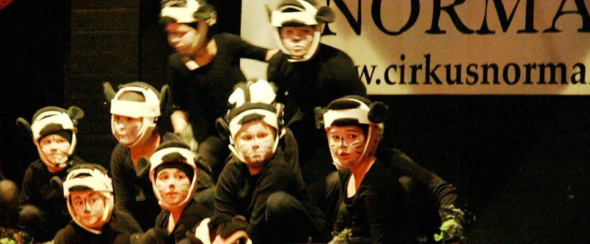

Femton år med Cirkus Normal
Cirkus Normals cirkusskola har funnits i Stockholm i femton år. Vi bedriver cirkusträning för barn och ungdomar i Stockholms innerstad samt Norrort. Närmare tvåhundra barn och ungdomar är aktiva i tretton grupper, uppdelade i Minicirkus 4–7 år, Barngrupper 6–10 år, Barn–/Ungdomsgrupper 9–14 år samt en ren Ungdomsgrupp 14–20 år. I alla grupper tränar pojkar och flickor tillsammans under samma villkor.